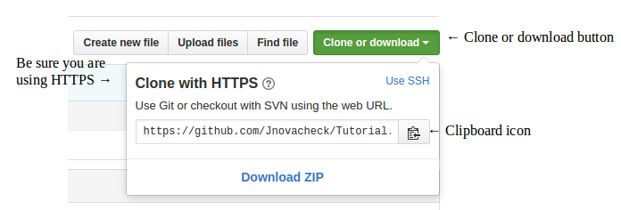

How to fork, clone, edit, commit and push with Github & Linux
for Cornell College's Computer Science Department.
Github
Hover over and underlined text, to see a definition of the word
Finding the correct repository
- Go to Github.com
- Create an account or log on to an existing account
- In the search bar type in the name of the repository
- The name of the repository will be given to you by your professor
Forking
- On the repository page click on the fork button
- This adds a copy of the repository to your git hub account
To create a second copy on your computer you will need to use a terminal window, but first you need to select your on-line repository.
- On your account's fork of the repository click on the large green Clone or Download button
- You will know it's your copy because your user-name will appear in the upper left corner of the screen followed by the name of the repository you are going to copy
- Copy the link provided in the text box, this can be done easily by clicking on the clipboard icon
- Make sure that you are cloning with HTTPS
